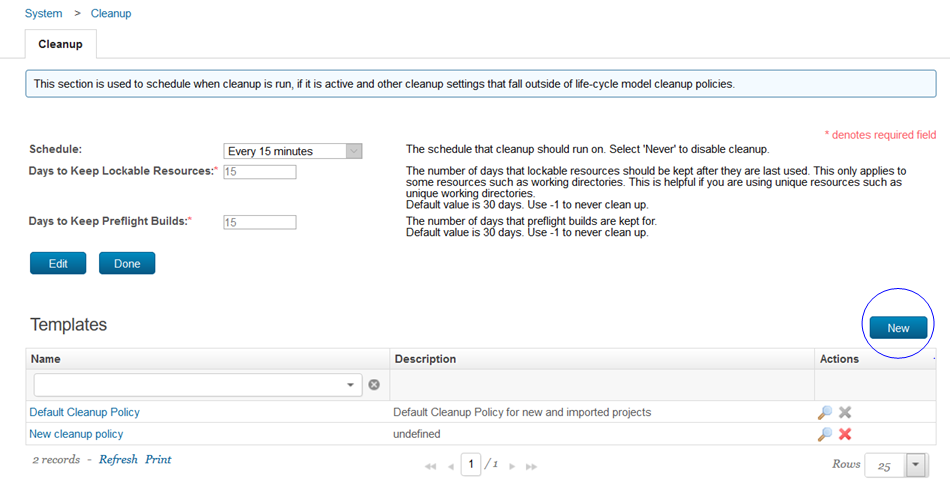
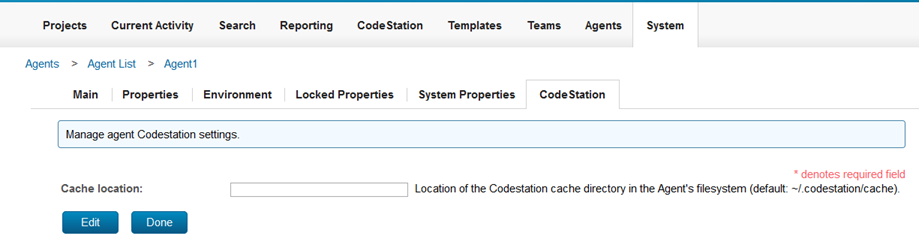
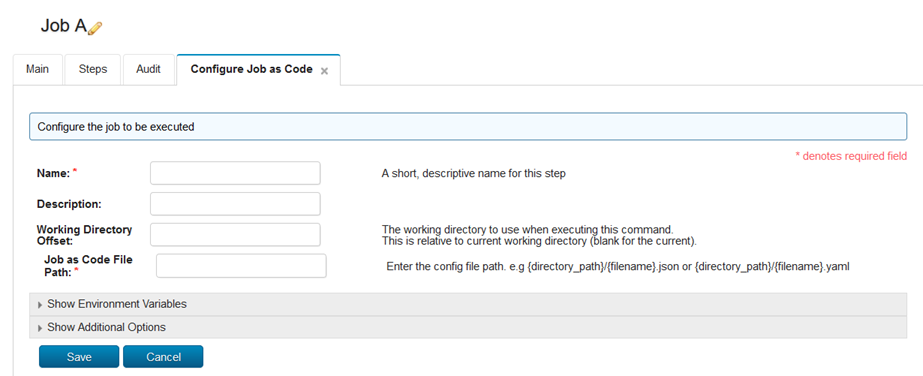

This article was originaly published in 2020.09.24
6.1.7.0
This release of IBM UrbanCode Build is a maintenance release and includes various bug fixes and enhancements. This release is recommended for all customers.
New Features
User interface improvement
The drag and drop feature now applies to all template types.
New System Setting
The Audit User system setting added to the Security settings. When enabled user logon and logout events are recorded in the audit log.
Cleanup Policy
Multiple cleanup policies can be created. Policies that you create can be deleted and the default policy can be disabled.

Agent and Agent Pool enhancements
The location of the agent CodeStation cache is now configurable. You can specify the location to use instead of the default location.

A new section In Use by has been added to the detail window for an agent pool to view the projects attached to the pool.
The detail page for a build life now includes the agent used by the build processes.
Nested properties
You can nest properties to create more specific output. Create a nested property by combining multiple properties.
Support added to use configuration file as a job step
The new Job as Code plug-in allows you to configure a job step as a JSON or YAML file.
